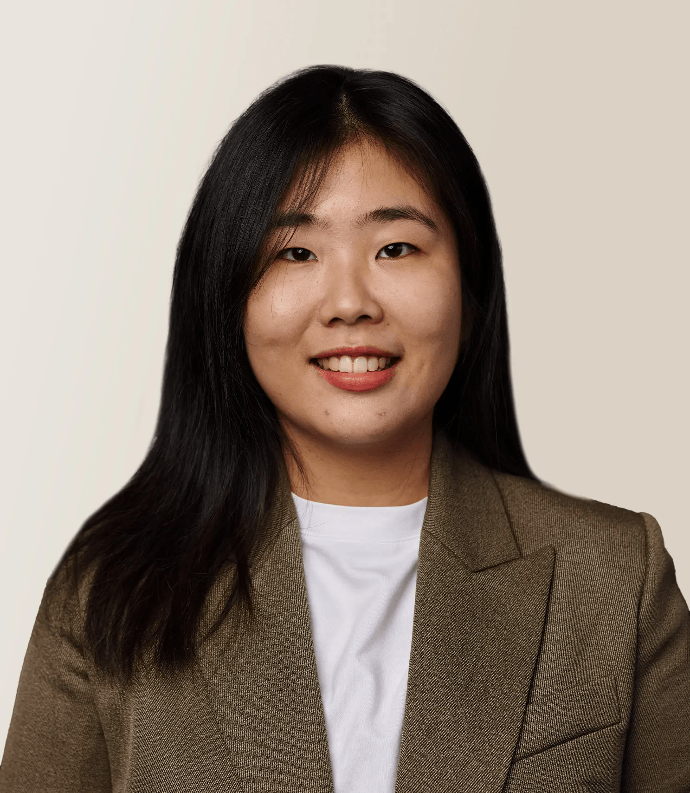

Zeyang Xue
PhD Candidate, Strategy & Innovation
Boston University, Questrom School of Business
Boston, MA
On the 2026–2027 academic job market
Research interests: innovation, entrepreneurship, intellectual property, and gender.
About
Welcome! I am a PhD candidate in Strategy and Innovation at Boston University Questrom School of Business, expected to graduate in 2027.
My research lies at the intersection of innovation, entrepreneurship, intellectual property, and gender. My job market paper studies how common venture capital ownership shapes startup innovation.
My dissertation committee is co-chaired by Rosemarie Ziedonis and Laurina Zhang, with Raviv Murciano-Goroff and Mario Leccese serving as committee members.
Prior to joining BU, I received an M.A. in Economics from the Rome Masters in Economics (EIEF-LUISS) and a B.A. in Finance from the Central University of Finance and Economics in Beijing.
I am on the 2026–2027 academic job market.